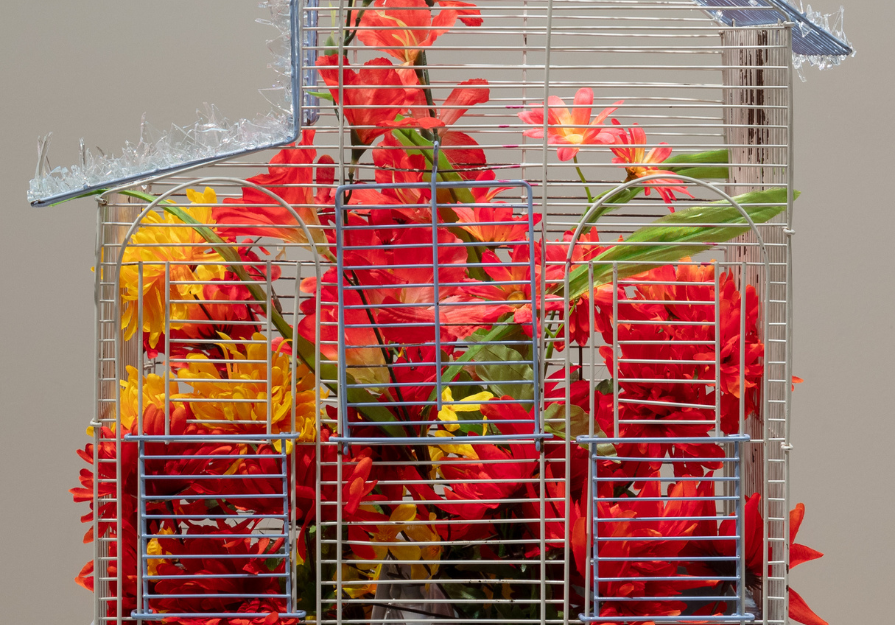

Forget Me Not
Attend the EXPO reception for Forget Me Not on Sunday, April 12th, from 2:00-6:00 pm.
Forget Me Not features 10 emerging and mid-career Chicago-based artists who showcase the city’s burgeoning creative talent and diversity: Stevie Connor, Rex Delafkaran, Bailey Ellens, Juan Molina Hernández, Bianca Pastel, Ava L. Peterson, Alayna Pernell, Kitty Rauth, Selma Suleiman, and Marlon Tobias, all of whom broadly reflect on themes of place, home, belonging, and community.
Curated by School of the Art Institute of Chicago (SAIC) Arts Administration and Policy graduate students Serena Fox, Isabelle (Izzy) Jaeggin, Tia Lowe, and Helena Rodriguez, in collaboration with Epiphany Center for the Arts, the exhibition presents a diverse range of artistic practices, including installation, photography, ceramics, and sculpture, with fiber, collage, and painting.
While some of the featured artists render the ideas of place, home, belonging, and community tangibly through their usage of objects, materiality, and the natural world, others probe the emotional and psychological landscapes of nostalgia and childhood. Characterized by movement and diaspora, these artists draw on archival material, ancestral traditions, and cultural motifs, grounding their work in practices of preservation.
Forget Me Not highlights both the tension and interdependence between individualism and communal belonging. Together, these artists offer an assemblage of perspectives on how we ground ourselves in the world: through ritual, storytelling, connectivity, joy, and resistance. We invite viewers to consider the power of the collective and how, despite our differences, we all find ourselves here, together.